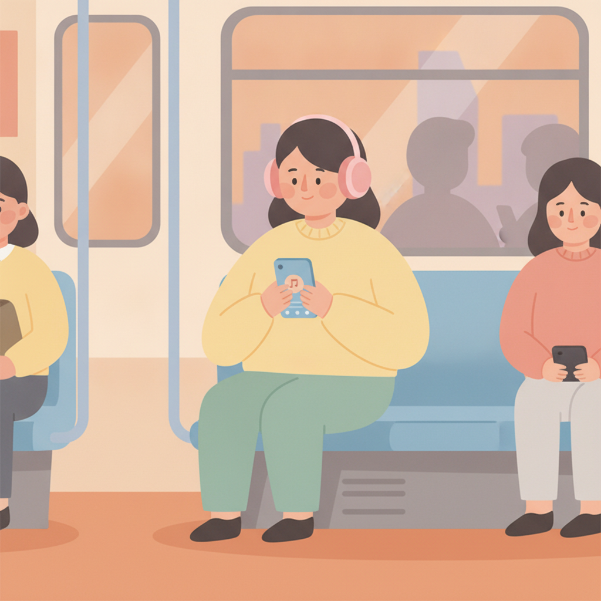

上班族學樂器：練琴時間怎麼排？一天練多久鋼琴才有效
「我一週只能練三天，每次 20 分鐘，這樣學得起來嗎？」這是上班族學生最常問我的一句話。我想先把答案放在最前面——學得起來。而且很可能學得比你想的好。
學得起來。一天練多久鋼琴才有效？我的答案是：一次 20 到 30 分鐘的專注練習，一週三到四次，就足以穩定進步。短而規律的人，進度常常贏過週末狂練三小時的人，因為手指記住動作靠的是「重複出現的頻率」，不是單次的長度。
真正的關鍵，是把練習拆小、塞進你原本就有的縫隙。下面給你一套可以直接複製的一週範本。
晚上九點半，你拖著一身會議的疲憊開門，鞋一脫，看見角落那台琴。心裡有個聲音說今天該練了，另一個聲音馬上接話：只剩半小時，練了有什麼用？於是你滑了一下手機。一天就過去了。這個場景我聽過太多次，所以這篇想認真回答一件事——時間很少的上班族學樂器，到底怎麼練、練多久，才真的有效。
一天練多久鋼琴才有效？密度勝過時長
先講一件很多人不知道的事：你的手指和大腦，不是在練習的當下變厲害的，而是在練習之後——尤其是睡覺的時候——悄悄把動作寫進去的。這代表什麼？代表一次練三小時，寫入的機會只有一次；拆成六次半小時，寫入的機會有六次。所以我都跟學生說，別跟時長較勁，去跟密度做朋友。一次 20 到 30 分鐘、一週碰琴三到四次，聽起來很少，但只要每一次都練在刀口上，三個月後你會嚇到自己。真的。
反過來看，平日完全不碰、只在週末狂練三小時的人，表面上很用功，其實每次坐下來，都得先花半小時把上週退掉的手感撿回來。撿完，也累了。這就是為什麼「練習密度」勝過「練習時長」——同樣一小時，天天見面十分鐘，比一次長談六十分鐘有用得多。
一個晚上九點才到家的學生
說個真實的例子。我有個學生做軟體業，加班是日常，到家常常已經九點多。他第一次來的時候有點不好意思，說自己是看了成人零基礎學音樂會太晚嗎那篇，一時衝動報名的，「可是老師，我真的沒什麼時間。」我跟他說沒關係，我們不要跟時間硬碰硬。我們繞過它。
我們把他的練習拆成三塊。通勤的捷運上，戴耳機聽這週在練的曲子，用耳朵先把旋律記熟；睡前刷完牙，在桌面上做五分鐘指法，不出聲、不用琴；然後只在週末，把這些零件真正合起來，完整練一次。三個月後，他把一首擱了很久的曲子從頭到尾順順地彈完了。他自己都說不敢相信——這三個月裡，他沒有任何一天「認真練超過半小時」。可是他幾乎天天都跟那首曲子見面。差別就在這裡。

上班族的一週練琴範本（可以直接抄）
下面這套安排，是我替很多上班族學生排過、又依他們的回饋修過之後，留下來的骨架：
- 每天通勤——戴耳機聽本週在練的曲子，注意旋律的起伏、哪裡呼吸。耳朵越熟，手越省力。
- 週二、週四睡前 10 分鐘——不用出聲的練習：在桌面上做指法、看譜在腦中走一次，把最難的那兩三個動作慢慢做對。
- 週一、三、五下班後 20 分鐘——只練最卡的那四到八個小節，不要每次都從頭彈。卡的地方通了，整首就通了。
- 週末挑一天 30 分鐘——把整首合起來跑一次，順手錄一小段。下週通勤，就改聽自己的錄音。
你會發現，這套範本裡真正坐在琴前的時間，一週加起來大概九十分鐘。不多。但它的密度很高——你一週跟這首曲子見了七次面，而且每一次，都只做那個時段最適合做的事。
把進度排進生活縫隙，而不是要你騰出生活
當然，上面只是骨架。有人輪班，有人下班要接小孩，有人平日反而比週末鬆——每個人的縫隙長得都不一樣，所以我從來不發同一張練習表給所有學生。你告訴我你的一週長什麼樣子，我來排。成人練琴這件事，不應該變成你人生裡又一個「做不到的目標」。它應該長在你的生活裡。剛剛好的那種。
常見問題
一天練多久鋼琴才有效？
對時間有限的上班族來說，一次 20 到 30 分鐘的專注練習、一週三到四次，就足以穩定進步。關鍵是每次都練在最卡的段落，而不是每次都從頭彈到尾。短而規律，勝過偶爾狂練。
出差一週完全沒練，會退步嗎？
會生疏一點，但不會歸零。回來的第一次練習用慢速把手感叫回來，通常兩三次就補回原本的水準。出差期間聽正在練的曲子、看譜、在桌面上做指法，都是不用樂器的隱形練習，能讓退步幅度小很多。
住在租屋處、晚上不能出聲，怎麼練？
鋼琴可以用電鋼琴戴耳機，完全不吵到鄰居。長笛可以做無聲的指法練習、對著鏡子練嘴型、做呼吸與長音的氣息練習，把出聲的部分集中到上課和週末的空檔。安排得當，安靜的日子一樣在進步。
平日完全沒空，只在週末練可以嗎？
可以開始，但進步會比較慢，因為兩次練習隔了七天，每次都要先花時間撿回手感。建議平日至少留兩三個五分鐘的微練習——通勤聽曲子、睡前桌面指法——讓記憶不要斷線，週末的大塊時間才會用在前進，而不是復原。
快速重點
- 一次 20 到 30 分鐘、一週三到四次，就足以穩定進步。
- 練習密度勝過練習時長，天天見面十分鐘，比一次長談一小時有用。
- 把練習拆成三塊：通勤聽、睡前指法、週末合起來。
- 沒空碰琴的日子，聽曲子和桌面指法都是隱形練習。
- 範本只是骨架，作息人人不同，跟老師一起調成你的版本。